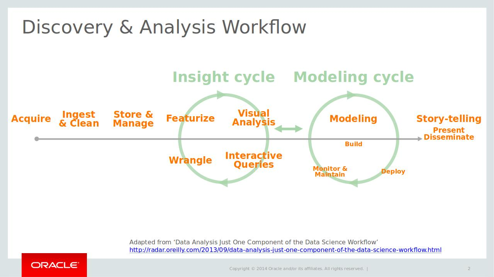

Galaxy Community Conference 2015
Peter van Heusden (pvh@sanbi.ac.za)

Visualisation powered by BioJS
John Chilton's presentation at BOSC 2015

Slide adapted from Ben Lorica
What next?
- SANBI cluster support for Docker (October 2015)
- Implement RNASeq and genome annotation in Galaxy workflows
- BioJS already in use in Bass Explorer (bassex) at SANBI, increase use and contribute
- Re-engineer Galaxy workflow engine (results by mid 2016)
Thank you
 GCC 2015
GCC 2015
Many thanks to Alan Christoffels and Olabode Ajayi for supporting and collaborating on this research.